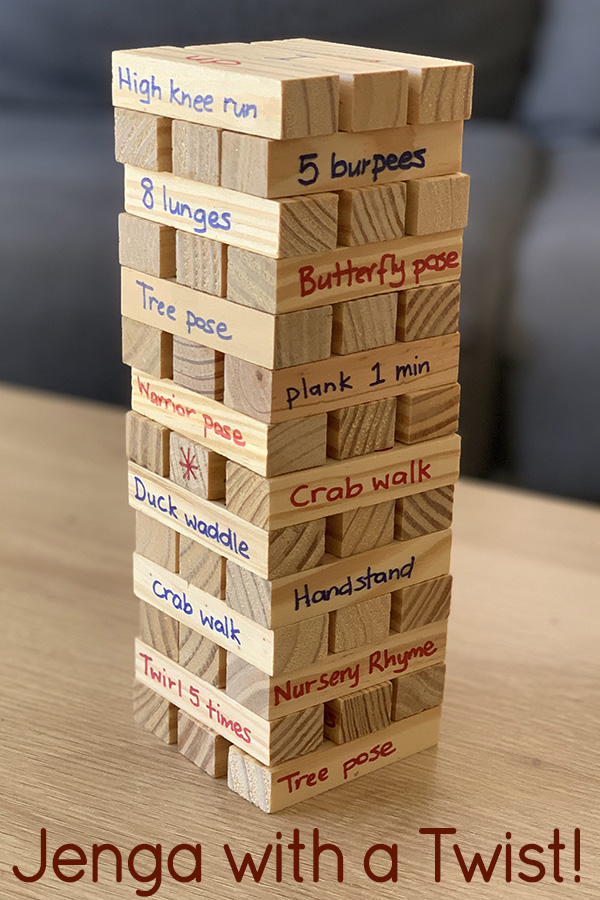
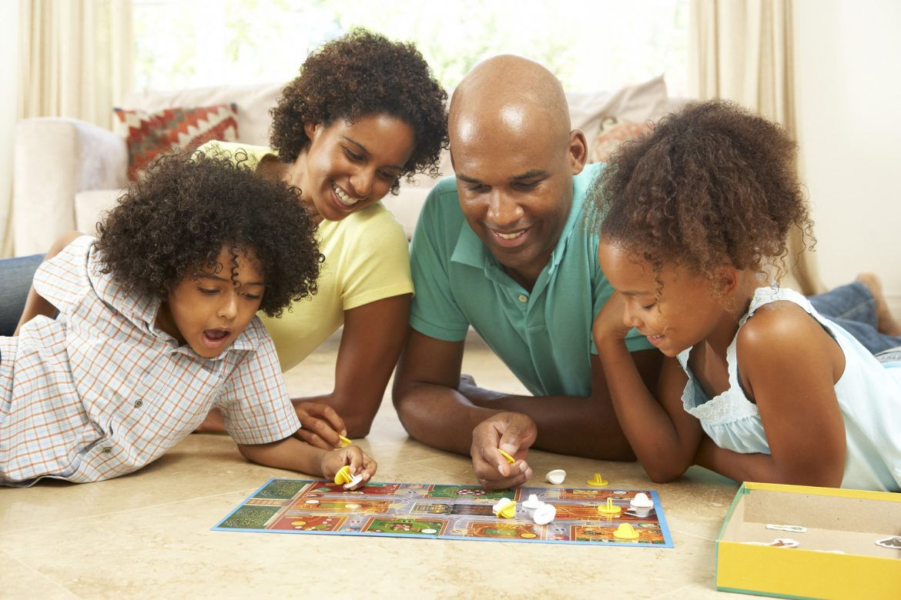

Family Game Night: Fun For All Ages!
We all have busy schedules and put things off to the next day, then it turns to weeks. Time is so valuable and we should make as many memories with the people we care about asmuch as possible. Technology has become a distraction from human interaction and even the beauty of the world around us. Lets start building memories again and I'm here to offer a few suggestions to get you and your loved oned started.
Why Family Game Night
There are many benfits to having game nights. Spending time together can help reduce screen time for the household. Lets face it our children are not the only ones guilty of staring into the phone, TV, or video games for hours. Reduced screen time will allow you to have face to face interaction and help build relationships. Playing games can also help reduce stress. Even the most competitive game will spark some laughter. Depending on the type of games you choose it could increase problem solving skilld and critical thinking.
Top Game Picks
- Monopoly
- UNO
- Clue
- Game of Life
- Sorry
- Jenga
- Minute to Win it Games
Creating "The Game Night" Atmopshere
The most important thing you need is you, the game of your choice, and the people you care about. Choose a fun game that everyone can enjoy. If you enjoy decorating or hosting, use this as an excuse to take the night up a notch. I personally enjoy making a charcuterie board one for the adults and one for the kids with all of our favorite fruits, cheese, crackers, jam and toast. While other times may be a a pizza and wings night. Whatever you choose just have some snacks handy in case you get hungry because it's easy to lose track of time when your having fun. Cozy and cute is my motto.
